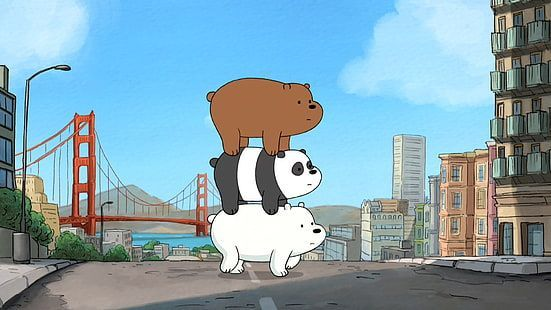

¡Bienvenido a nuestra
Aventura Gráfica!
Explora los distintos caminos junto a los osos.
Click para empezar :D
La temática: Escandalosos
Nuestra aventura gráfica se centra en la serie animada "We Bare Bears" en inglés o "Escandalosos" en español. El objetivo es ayudar a Pardo, Panda y Polar a encontrar el lugar perfecto para un picnic. La dinámica de la aventura se basa en tomar decisiones, el jugador tiene que elegir entre los caminos sugeridos, determinando cómo avanza la historia. Esto nos ayudó a diseñar una mecánica que cumple con tener distintos finales dependiendo de la elección que haga el jugador. Además, intentamos que la estética de la interfaz y los escenarios sean del mismo estilo visual simple y amigable que tiene la serie.

Proceso de producción
- Mapa: Armamos un mapa con los distintos caminos/recorridos que puede hacer el jugador.
- Imágenes: Buscamos imágenes que sean parecidas a los escenarios que planteamos en el mapa.
- Programar en p5.js: Empezamos a programar la lógica interactiva, el manejo de estados, los botones, el sonido dependiendo el final.
- Prueba: Verificamos que todos los botones sean clickeables, que lleguen a la pantalla correcta y que el sonido funcione bien.
El equipo
Zoe Harima
Programó la estructura base del juego, poniendo las condiciones de la lógica (cómo cambiamos de pantalla), programando los botones y el funcionamiento del sonido dependiendo si es final bueno o malo.
Delfina Cebey
Se encargó de la parte visual. Buscar las imágenes de cada escena, elegir la fuente más parecida a la de la serie y programar en cada pantalla los elementos visuales que debían aparecer.